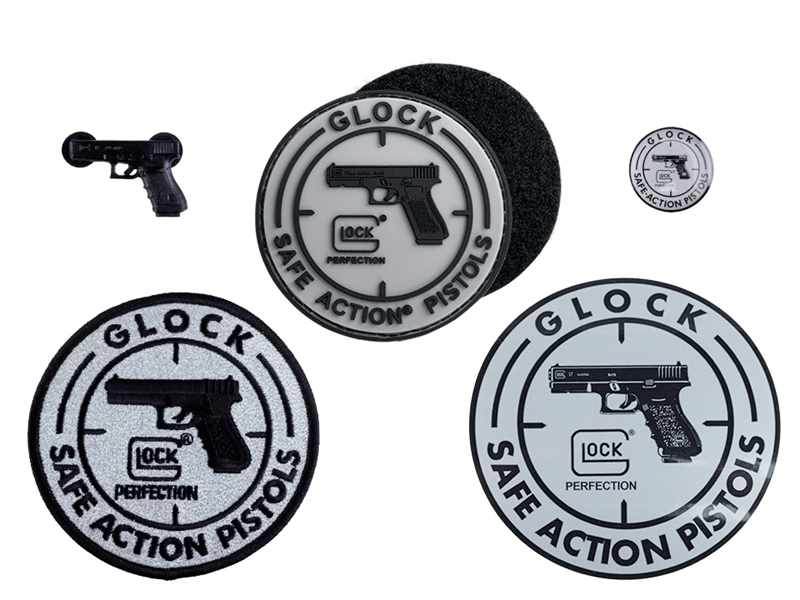

Viel Spaß mit Glock!
Beweisen Sie sich in unserem Quiz und gewinnen Sie eine Werksführung in Ferlach oder einen von zahlreichen Fanartikeln!
1. Wann wurde die Glock 17 zum Patent angemeldet?
Gar nicht! Sie wurde ohne Patent produziert.
1990
Bei der Firmengründung 1963
1981
2. Welche Munition erfordert die Glock 17?
9x19mm
Die Glock ist flexibel, jede passt!
.45
10mm
3. Wo befinden sich die Produktionsstätten der Glock GmbH?
In Villach und in St. Pölten
Mir egal!
In Deutsch Wagram, Georgia und Ferlach
Überall und nirgends, alle im Home Office
Auswahl absenden
